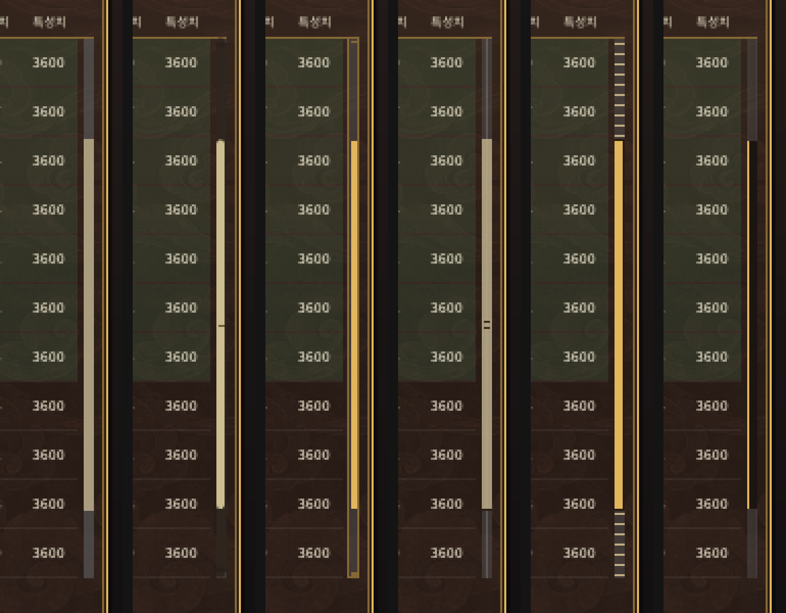
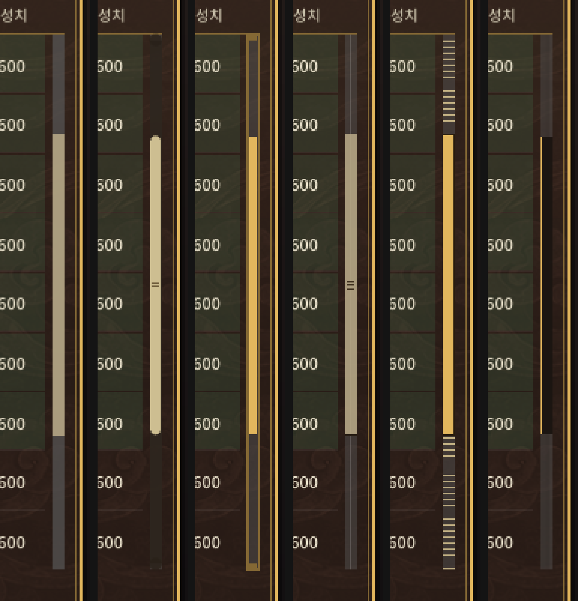
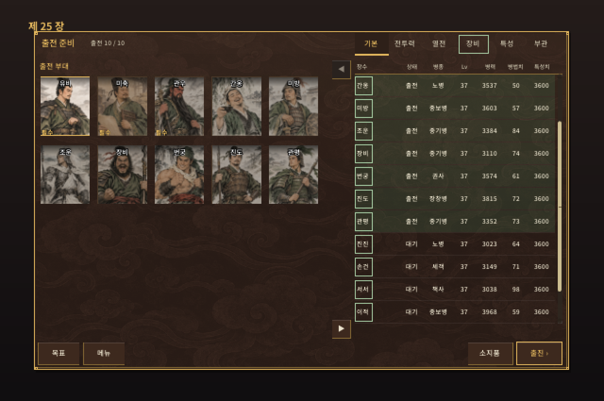
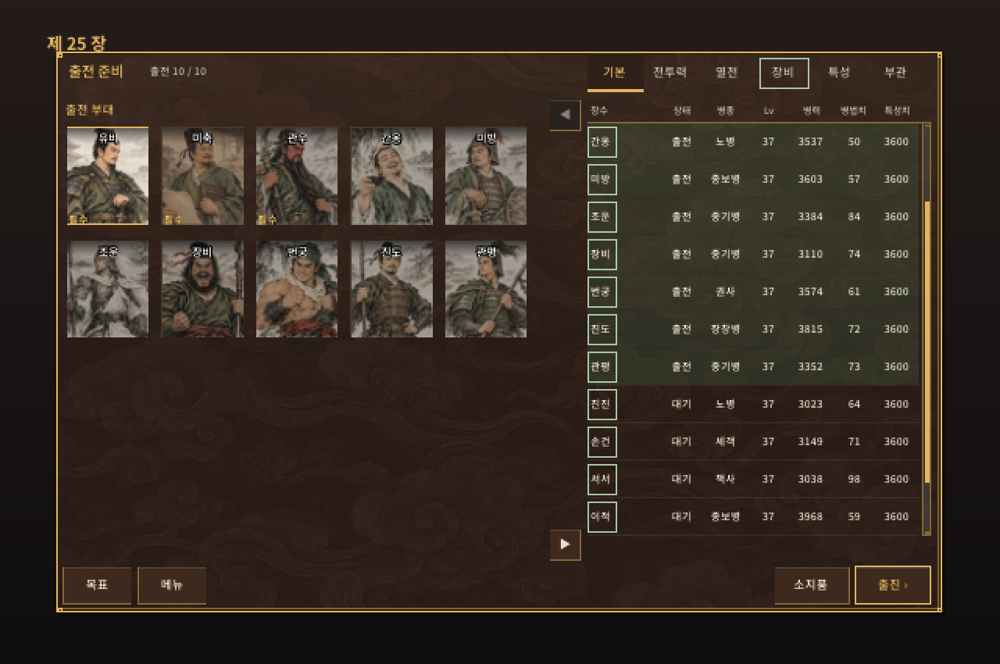
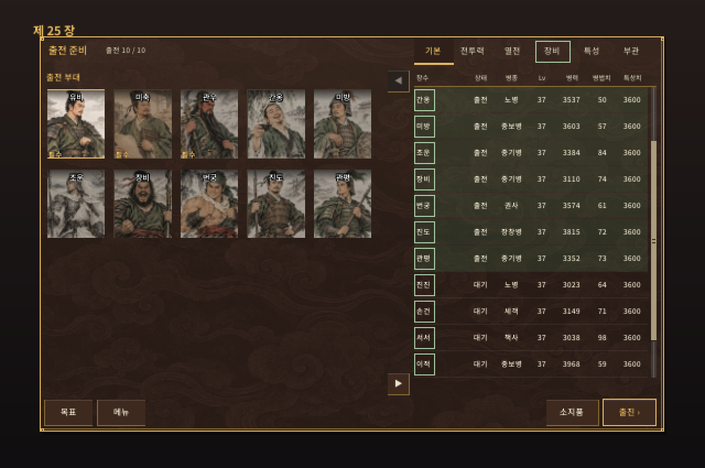
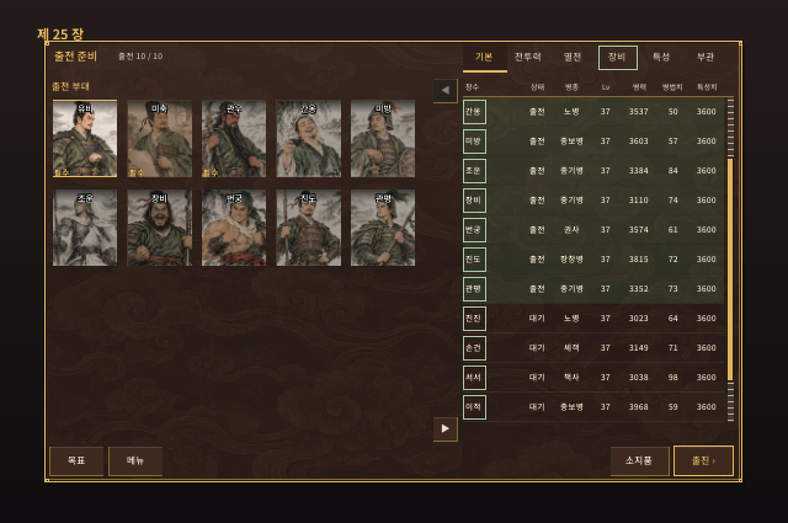
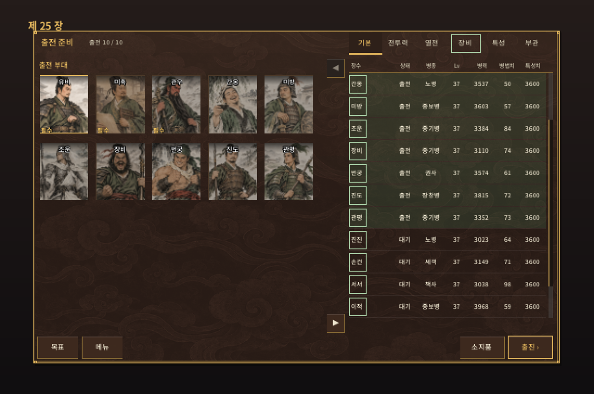
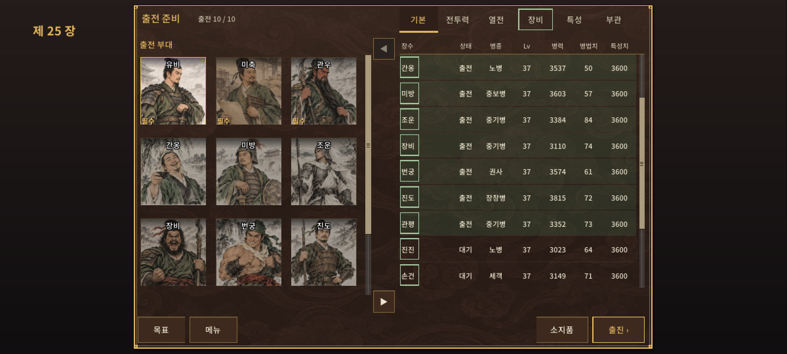
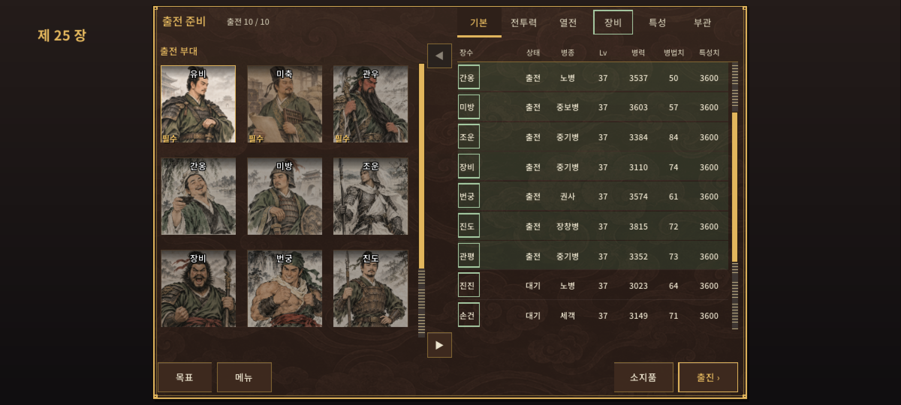
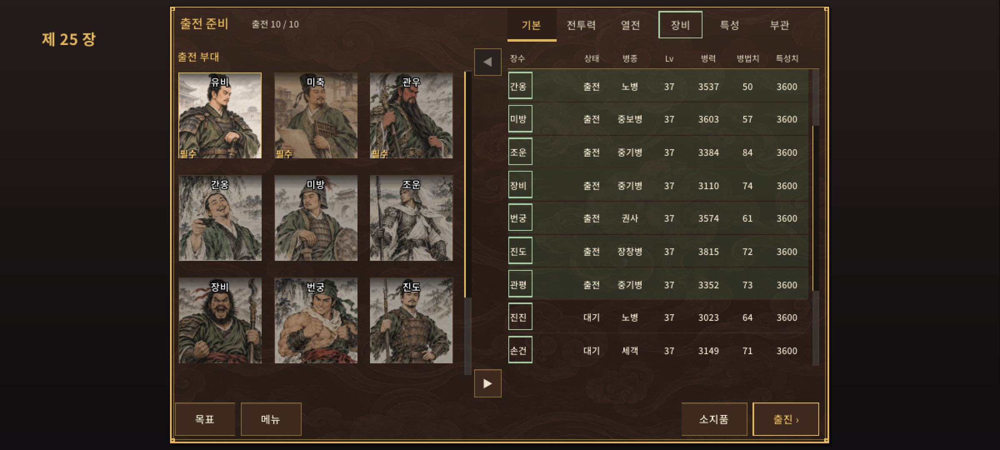

공통 스크롤바 시안 5종 (현행 참고 포함)
모든 그림은 실제 게임 화면 캡처입니다(출전 준비, 제25장 c25-battle, 장수 표가 스크롤되는 상태). 실제 게임 밖의 모형은 없습니다. 같은 화면에서 손잡이 모양만 바꿔 찍었습니다. 어느 시안도 최종 채택이 아닙니다. 사용자가 고릅니다.
생성: ver5/internal/gui/scrollbar_style.go의 scrollBarStyles, 데모 ver5/internal/gui/uidemo_scrollbar.go(-ui scrollbar). PC는 기본 1280×850, 휴대폰 참고는 UIDEMO_TAGS=mobile, -size 2400x1080 -uiscale 130.
같은 화면의 스크롤바 6개 나란히 (확대)
PC 1280×850 — 왼쪽부터 현행, A, B, C, D, E. 각 칸은 같은 위치의 장수 표 스크롤바.

휴대폰 참고 2400×1080, UI 130% — 같은 순서.

시안별 설명
현행 (참고, 시안 아님)
- 반투명 회색 홈, 밋밋한 베이지 손잡이.
- 지금 게임에 있는 그대로.
- 손잡이 폭 10px, 손으로 잡는 영역이 좁다.
A 죽간
- 둥근 짙은 홈 위에 베이지 알약 모양 손잡이.
- 가운데 가로 결 두 줄로 잡을 곳을 표시.
- 손잡이 전체가 잡는 영역.
B 금테 홈
- 금색 테두리 홈, 밝은 금색 손잡이.
- 홈 양 끝의 금줄이 위·아래 끝처럼 보인다.
- 대비가 커서 가장 잘 보인다. 홈 전체가 잡는 영역.
C 그립
- 가는 선 홈과 세 줄 결이 있는 넓은 손잡이.
- 손잡이 아랫줄에 짙은 그림자.
- 잡는 곳 표시가 가장 분명하다. 홈은 덜 보인다.
D 눈금
- 트랙에 5px 간격의 눈금, 손잡이는 금색 블록.
- 눈금 개수로 목록 길이를 어림할 수 있다.
- 가장 정보가 많고 가장 복잡하다.
E 먹
- 먹색 손잡이에 왼쪽 금테 한 줄, 흐린 먹 번짐 홈.
- 대비가 가장 강하다. 어두운 바탕에서 손잡이가 가장 또렷하다.
- 금 테두리는 잡히거나 드래그 중일 때만 붙는다(현행 hover 규칙과 같음).
전체 화면 (PC · 휴대폰, 프레임 55 = A 죽간, 프레임 115 = C 그립)
전체 화면은 각 프레임 PNG 그대로입니다. 각 시안은 프레임 25(현행), 55(A), 85(B), 115(C), 145(D), 175(E)에 해당합니다.








확인하지 않은 것
- 실제 휴대폰 기기에서의 손가락 크기·터치 감각. 확대 캡처와 참고 크기로만 봤다.
- 손잡이가 호버·드래그 상태일 때의 색 변화를 모든 시안에서 따로 캡처하지 않았다(코드는 같은 규칙).
- 시안 중 무엇을 채택할지는 사용자가 정한다. 이 페이지에서 정한 것은 없다.